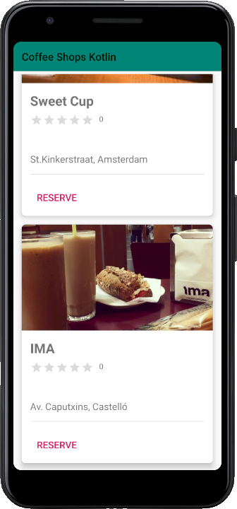

2.2.1 - Exemple
Anem a modificar un exercici fet en el mòdul de DI, el de CoffeeShops, per a guardar les dades en una Base de Dades SQLite. Concretament el que anem a guardar en la Base de Dades són les dades dels cafès i les imatges.
Nota
Si no teniu aquesta aplicació, us la podeu baixar del Moodle, tant la versió original per a poder aplicar els canvis ací exposats, com la versió amb els canvis ja fets.
El primer que haurem de fer és dissenyar la Base de Dades, cosa senzilla, ja que només ens plantegem mostrar el nom del cafè, l'adreça, la puntuació si la tinguérem i una imatge. També guardarem un número del local, que el podem fer perfectament autoincrementat. Si pensem en afegir algun camp, ho podem fer a posteriori sense cap problema
LOCAL (num, nom, adreca, punts, imatge)
Com dèiem, el primer camp el farem enter autonumèric, el segon i tercer de text, i el quart també enter.
Per a guardar la imatge, podríem fer referència únicament al seu nom (i en tot cas ruta), i per tant seria també de text. Aquesta és la manera més habitual de guardar les imatges. Però en aquest exemple, per a poder practicar un poc més, intentarem guardar la mateixa imatge en la Base de Dades. En aquest cas el tipus de dades apropiat és BLOB.
LOCAL (num: integer, nom: text, adreca: text, punts: integer, imatge: Blob)
No ens plantejarem crear la Base de Dades des de l'aplicació, ja que suposaria accedir als fitxers de les imatges i seria un procés més laboriós que no interessa en aquest moment. Ens ajudarem doncs d'alguna utilitat de SQLite, per exemple el SQLite Studio, que permet introduir camps normals i també fitxers sencers en un Blob incloent imatges des de la versió 3.2. Anomenarem a la Base de Dades CoffeeShops.sqlite. Si no us aclariu a crear la Base de Dades, la podeu demanar al professor.
Del programa ja fet en l'altre mòdul (DI) no canviarem molta cosa, únicament la procedència de les dades, i l'estrictament necessari:
-
En Tarjeta, la propietat imag abans era un int perquè guardàvem la referència de la imatge, però ara guardarem la mateixa imatge, que la portarem des de la Base de Dades. Ens convé un array de bytes (ByteArray), ja que podrem passar fàcilment les dades des de la BD, i damunt és serialitzable. Podríem haver utiltizat un Drawable, però aquest no és serialitzable mentre que l'array de bytes sí, i ens fa falta per a poder passar les dades al segon Activity. Haurem de canviar també el getImag, lògicament. Estan marcades en roig les coses que han canviat.
class Tarjeta(val imag: ByteArray, val titulo: String, val subtit: String) {}
-
En CardsAdapter canvia la manera de plasmar la imatge. Abans era un int que feia referència a un recurs (la imatge guardada en res.drawable). Ara tenim la pròpia imatge, en un ByteArray. Una manera de passar-li'l al ImageView és convertir-la prèviament en un Bitmap (amb el mètode decodeByteArray de BitmapFactory).
import android.view.LayoutInflater
import android.view.View
import android.view.ViewGroup
import android.widget.ImageView
import android.widget.RatingBar
import android.widget.TextView
import androidx.recyclerview.widget.RecyclerView
import android.graphics.BitmapFactory
class CardsAdapter(private val items: ArrayList<Tarjeta>) : RecyclerView.Adapter<CardsAdapter.TarjViewHolder>() {
inner class TarjViewHolder(itemView: View) : RecyclerView.ViewHolder(itemView) {
private val imagen: ImageView
private val text: TextView
private val text1: TextView
private val barstars: RatingBar
private val puntos: TextView
init {
imagen = itemView.findViewById(R.id.img1)
text = itemView.findViewById(R.id.textView)
text1 = itemView.findViewById(R.id.textView1)
puntos = itemView.findViewById(R.id.textView2)
barstars = itemView.findViewById(R.id.ratingBar)
}
fun bindCards(t: Tarjeta) {
//imagen.setImageResource(t.imag)
val img = t.imag
val imgBmp = BitmapFactory.decodeByteArray(img, 0, img.size)
imagen.setImageBitmap(imgBmp)
text.text = t.titulo
text1.text = t.subtit
barstars.onRatingBarChangeListener = RatingBar.OnRatingBarChangeListener { ratingBar, rating, fromUser ->
puntos.text = rating.toString()
}
}
}
override fun onCreateViewHolder(viewGroup: ViewGroup, viewType: Int): TarjViewHolder {
val itemView = LayoutInflater.from(viewGroup.context).inflate(R.layout.item_cards, viewGroup, false)
return TarjViewHolder(itemView)
}
override fun onBindViewHolder(viewHolder: TarjViewHolder, pos: Int) {
val item = items[pos]
viewHolder.bindCards(item)
}
override fun getItemCount(): Int {
return items.size
}
override fun getItemViewType(position: Int): Int {
return position
}
}
-
Inicialment copiarem la Base de Dades ja dissenyada al lloc oportú del simulador de dispositiu, que serà /data/data/nom_del_paquet/databases/CoffeShop.sqlite. Estaria bé copiar el fitxer de la Base de Dades la primera vegada que s'execute el programa, però ho deixarem per a un poc més avant. Per a comprovar que realment agafem les dades de la Base de Dades, incorporarem una nova fila que no estava abans.
-
La classe que derivarà de SQLiteOpenHelper, serà inicialment molt senzilla: no tindrà res. Distint seria si vulguérem copiar el fitxer de la Base de Dades la primera vegada que s'executa, però ara no ens ho plantegem. Per tant inicialment aquesta classe, que anomenarem SQLiteGestor serà així (fins i tot podeu deixar que es genere automàticament amb l'ajuda de Android Studio, quan poseu que hereta de SQLiteOpenHelper):
import android.content.Context
import android.database.sqlite.SQLiteDatabase
import android.database.sqlite.SQLiteOpenHelper
class SQLiteGestor(context: Context,name: String) : SQLiteOpenHelper(context, name,null,1) {
override fun onCreate(sqLiteDatabase: SQLiteDatabase) {}
override fun onUpgrade(sqLiteDatabase: SQLiteDatabase, i: Int, i2: Int) {}
}
-
En el programa que utilitza tot l'anterior, que és CardsActivity, l'únic que canviarà és que no crearem els objectes Tarjeta directament, sinó que agafarem les dades de la Base de Dades. Observeu que agafar la imatge és igual de fàcil que la resta de camps:
import androidx.appcompat.app.AppCompatActivity
import android.os.Bundle
import androidx.appcompat.widget.Toolbar
import androidx.recyclerview.widget.LinearLayoutManager
import androidx.recyclerview.widget.RecyclerView
class CardsActivity : AppCompatActivity() {
private var items: ArrayList<Tarjeta>? = null
override fun onCreate(savedInstanceState: Bundle?) {
super.onCreate(savedInstanceState)
setContentView(R.layout.activity_cards)
items = ArrayList<Tarjeta>()
/*items!!.add(Tarjeta(R.drawable.images, "Antico Caffè Greco", "St. Italy, Rome"))
items!!.add(Tarjeta(R.drawable.images1, "Coffee Room","St. Germany, Berlin "))
items!!.add(Tarjeta(R.drawable.images2, "Coffee Ibiza","St. Colon, Madrid"))
items!!.add(Tarjeta(R.drawable.images3, "Pudding Coffee Shop", "St. Diagonal, Barcelona"))
items!!.add(Tarjeta(R.drawable.images4, "L'Express", "St. Picadilly Circus, London"))
items!!.add(Tarjeta(R.drawable.images5, "Coffee Corner","St. Àngel Guimerà, Valencia"))
items!!.add(Tarjeta(R.drawable.images6, "Sweet Cup","St.Kinkerstraat, Amsterdam")) */
var bdg: SQLiteGestor? = null
bdg = SQLiteGestor(this, "CoffeeShops.sqlite")
val bd = bdg.readableDatabase
val rs = bd.rawQuery("SELECT * FROM LOCAL", null)
while (rs.moveToNext())
items!!.add(Tarjeta(rs.getBlob(4), rs.getString(1), rs.getString(2)))
rs.close()
bd.close()
bdg.close()
val toolbar = findViewById(R.id.toolbar) as Toolbar
setSupportActionBar(toolbar)
val recView = findViewById(R.id.recView) as RecyclerView
recView.setHasFixedSize(true)
val adaptador = CardsAdapter(items!!)
recView.adapter = adaptador
recView.layoutManager = LinearLayoutManager(this, LinearLayoutManager.VERTICAL, false)
}
}
Amb açò la nostra aplicació ja funcionarà. Al final de tot es veuria un local nou, amb la seua imatge, introduït només en la Base de Dades, senyal que les dades s'agafen de la Base de Dades

Però com havia comentat abans, per acabar de deixar-la bé, hauríem de fer possible que la primera vegada es copiara d'alguna manera de Base de Dades, i no haver de copiar-la a mà dins del dispositiu.
El lloc oportú, òbviament, és en SQLiteGestor, la classe que hereta de SQLiteOpenHelper. Havíem vist en una altra ocasió que existia el mètode onCreate(). Però en aquest lloc col·locàvem les sentències SQL de creació de taula i d'inserció de dades. És a dir, aniran sentències SQL de quan ja existeix la Base de Dades, perquè s'acaba de crear.
En el nostre exemple no ens podem plantejar la sentència d'inserció, perquè hem d'inserir una imatge (en SQL !!!). El que més ens convé és copiar la Base de Dades des d'algun lloc, ja que la BD la hem creat des del DBeaver de forma còmoda i ens ha anat bé. Però en el onCreate() només podem fer sentències SQL.
La solució serà copiar el fitxer de la Base de Dades en el constructor de SQLiteGestor. I copiarem byte a byte, per tant ens convé el mètode readBytes() per a llegir (que llig tots els bytes del fitxer), i el mètode writeBytes() que escriu tots els byte que se li passen. El fitxer de la Base de Dades el posarem dins de res, com altres recursos, però en una subcarpeta anomenada raw. Android ens obliga a que aquest fitxer estiga en minúscules, per tant:
- Copiem el fitxer CoffeeShops.sqlite en res -> raw donant-li el nom coffeeshops.sqlite
La lògica que utilitzarem en el constructor per a copiar serà:
- Si no existeix el subdirectori databases, el crearem.
- Si no existeix el fitxer CoffeeShops.sqlite el copiarem
- Agafem el fitxer original amb context.getResources().openRawResource(R.raw.coffeeshops) (no se li posa l'extensió)
- Per aquesta lògica, si el fitxer ja existeix, no el copiarà. Per tant, si per les proves anteriors havíem copiat el fitxer directament (des del Android Device Monitor), l'haurem d'esborrar abans d'executar-lo la primera vegada.
import android.content.Context
import android.database.sqlite.SQLiteDatabase
import android.database.sqlite.SQLiteOpenHelper
import java.io.File
class SQLiteGestor( context: Context, name: String) : SQLiteOpenHelper(context, name, null, 1) {
private val myContext: Context? = null
init {
val PATH_BD = "/data/data/" + context.packageName + "/databases"
val NOM_BD = "CoffeeShops.sqlite"
val dir = File(PATH_BD)
if (!dir.exists())
dir.mkdir()
val f = File(dir, NOM_BD)
if (!f.exists()) {
val f_in = context.resources.openRawResource(R.raw.coffeeshops)
f.writeBytes(f_in.readBytes())
}
}
override fun onCreate(db: SQLiteDatabase) {}
override fun onUpgrade(db: SQLiteDatabase, oldVersion: Int, newVersion: Int) {}
}
Llicenciat sota la Llicència Creative Commons Reconeixement NoComercial CompartirIgual 2.5